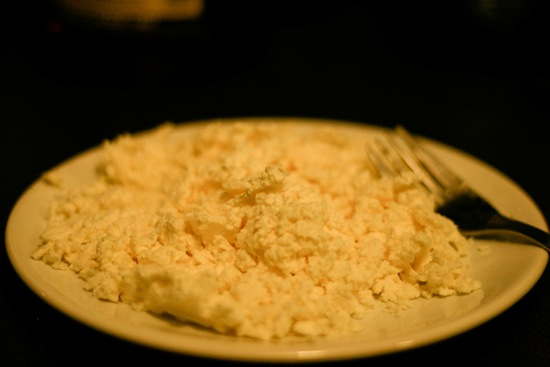

"For my first time as the Stuttgart Expat Cooking chef, I wanted something really surprizing whilst not requiring hours of preparation or rare ingredients you can't find in a regular supermarket. This recipe is exactly that: simple but still a truly original experience for the taste buds."
Heat margarine in a skillet.
Saute shallots and garlic for 4 minutes in the margarine.
Stir while doing so.
Add flour.
Cook for 1 minute on low flame.
Add milk and remove from heat.
Keep aside.
Squeeze out the water from the spinach and chop.
Squash the feta cheese with a fork.
Add spinach, feta cheese, bell pepper, salt and pepper to taste to the cooked sauce.
Re-heat on low heat.
Stir well for a minute.
Meanwhile, roast the chicken breasts
Remove from heat.
Garnish with parsley.
Serve on pasta.
500g pasta
4 chicken breasts
4 shallots, finely chopped
2 cloves garlic, peeled and crushed
2 tablespoons plain flour
400ml low-fat milk
1/2 cup feta cheese
300g spinach, boiled and drained
1 red bell peppers, finely chopped
2 tablespoons fresh parsley, finely chopped
2 tablespoons margarine
Salt & Black Pepper